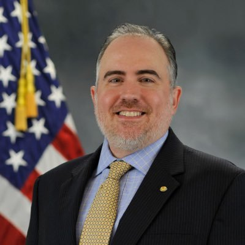
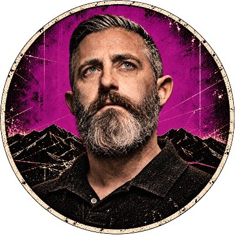
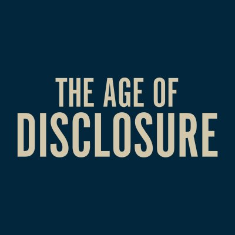

Science Bob News is an automated situation report of public UAP, UFO, and USO claims. Each cycle it reads public social posts and disclosure-podcast feeds, collapses reposts and brid.gy mirrors to one account, and counts another account only when it confirms the same claim. The letter rates the source from A to F, the digit rates the information from 1 to 6, and validity is the McGwier b2.81 score capped by that evidence, never above 0.90. A high score is not a claim that an object was non-human, and it is not a count of how often such reports are later confirmed.
Watched accounts (17)
These accounts are part of every retrain. A post is used only when its own text names a UAP, UFO, UFP, or USO subject, Skinwalker Ranch, or Jay Stratton’s memoir Out of the Shadows. UFP is matched as written. The word disclosure by itself is not enough. Jay Stratton is listed first. His account is source letter B because he ran the UAP Task Force as its first director. William Morrow says he created and led that task force. The 14 August 2020 Department of Defense release credits formal approval to Deputy Secretary David L. Norquist and does not name Stratton. One post is still a single account, so the information digit stays 4 until another source confirms the same claim. A listing is not a score. Follower counts are X profile totals read on 28 October 2026.

@jaystratton · 8 posts
Jay Stratton · 28,733 followers · source letter B
Created and ran the UAP Task Force
William Morrow and HarperCollins say he created and led the Unidentified Aerial Phenomena Task Force. Deadline, The Hollywood Reporter, and Variety repeated that wording in 2026. People (13 October 2026) identifies him as its first director, which is the sense in which he ran it. The Department of Defense release of 14 August 2020 says Deputy Secretary David L. Norquist approved the task force on 4 August 2020 and does not name him. Memoir: Out of the Shadows: Revealing the Truth About Non-Human Intelligent Life (William Morrow, 13 October 2026).
Very proud to share that my memoir, Out of the Shadows, has debuted at #2 on the NY Times Best Sellers List. Thank you to everyone who has read the book and recommended it to friends and family. And thank you to everyone who helped make this book possible!
Here’s my full interview with @ElizabethKPIX and @CBSNews, discussing my memoir, Out of the Shadows. Thanks for your support, Elizabeth!
Here’s my full interview with @jaketapper @TheLeadCNN about my new memoir, Out of the Shadows. Thanks again for your support Jake and @CNN!
Here’s my full interview from tonight with @JesseBWatters regarding my memoir, Out of the Shadows. Thanks again for your support @JesseBWatters @FoxNews!
Had a great time discussing my new memoir, Out of the Shadows, with @JesseBWatters on @FoxNews. Thanks for your support @JesseBWatters!
Great talking with @jaketapper @TheLeadCNN about my memoir, Out of the Shadows. Thanks for your support @jaketapper!
Love this shot. Dr. Travis Taylor, Chief Scientist of the UAP Task Force, me, and Dr. Hal Puthoff, Chief Scientist of AAWSAP.
Feels great to finally have the first physical copy of Out of the Shadows in my hands! Excited for you all to get yours!
@TravisTaylorX · 0 posts
Travis S. Taylor · 16,142 followers · source letter C
Named with the task force circle
Scientist and engineer. Public posts concern Skinwalker Ranch. No post in the 28 October 2026 retrieval stated a UAP subject in its own text, so this account is listed and not yet in the fit.
No in-scope post in the fit.
@BrandonFugal · 4 posts
Brandon Fugal · 148,165 followers · source letter C
Named with the task force circle
Skinwalker Ranch. Chairman, Colliers Utah.
Fall morning at Skinwalker Ranch…footage courtesy of @MrPeteKelsey, one of our trusted technology partners & team members…
The White House highlights Skinwalker Ranch…and missing data…
Years at Skinwalker Ranch, including a craft I saw with witnesses beside me, bring me to the same place as Peter. The evidence is now accumulating faster than the skepticism.
On the heels of our season finale this week it was announced we are moving into immediate experiments & research for Season 8 of The Secret of Skinwalker Ranch!

@JeremyCorbell · 1 post
Jeremy Kenyon Lockyer Corbell · 309,106 followers · source letter C
Investigative journalist and filmmaker. Weaponized podcast. UAP reporting.
In 2022, George Knapp and I flew to Huntsville, Alabama, to sit down with Jay Stratton for his very first on-camera interview. Before Out of the Shadows. Before the headlines. The former director of the Pentagon’s UAP Task Force walks us through TIC TAC, GIMBAL, and GOFAST, his…
@LueElizondo · 1 post
Luis Elizondo · 265,096 followers · source letter C
Former AATIP director. Disclosure advocate and author.
Today we mourn the death of a good friend and great patriot. A military cop, a UAP whistleblower, and an Experiencer. Mario Woods was an inspiration to many, including myself. Never afraid to speak truth to power and he taught me many lessons on how to be a better human being. I…
@rosscoulthart · 2 posts
Ross Coulthart · 213,553 followers · source letter C
Investigative journalist, NewsNation. Reality Check. Hearings and whistleblowers.
Retired Navy admiral & fmr @NOAA admin @GallaudetTim warns of decades-long UAP 'cover-up,' points to deep ocean as ultimate hiding spot https://www.foxnews.com/media/retired-navy-admiral-warns-decades-long-uap-cover-up-points-deep-ocean-ultimate-hiding-spot #FoxNews
Extraordinary allegations from a lawyer who represented a man working inside the Legacy UAP retrieval program. Allegations of a covert conflict between an NHI & US @DeptofWar, the loss of @usairforce pilots concealed as training accidents. REALITY CHECK: https://www.youtube.com/…
@jamescfox · 1 post
James Fox · 186,066 followers · source letter C
Filmmaker: The Phenomenon, Moment of Contact, The Program.
@theblackvault · 1 post
John Greenewald Jr. · 184,388 followers · source letter C
FOIA specialist. Archive of declassified records.
NEW: I knew Larry Bryant for many, many years. So sad he passed back in 2020. He was a great friend, and researcher, who doggedly pursued the UFO truth through FOIA and litigation. The Black Vault has now archived just some of the historical CIA records documenting researcher La…
@InterstellarUAP · 1 post
Interstellar · 152,185 followers · source letter C
UAP news aggregation and commentary.
@PostDisclosure · 1 post
Post Disclosure World · 147,664 followers · source letter C
YouTube coverage of the UAP disclosure process.
@GarryPNolan · 1 post
Garry Nolan · 131,770 followers · source letter C
Stanford professor. UAP science advisory work.
@UAPJames · 2 posts
UAP James · 78,104 followers · source letter C
Congressional and media clips on UAP.
Jay Stratton tells Chris Cuomo the UAP Legacy Program is comprised of the CIA, U.S. Air Force, Department of Energy, and “defense contractor community”. President Trump is not aware of the program’s effort to recover and reverse-engineer “craft of non-human origin” per Stratton.
Rep. Burlison says President Trump’s UFO files release effort has given China and Russia an opportunity to beat the U.S. to Disclosure. “I think the President and his PURSUE effort has frustration… We have a very Deep State that’s still holding onto a lot of information.”

@ageofdisclosure · 1 post
The Age of Disclosure · 64,552 followers · source letter C
Account for the Age of Disclosure documentary.
@disclosureorg · 1 post
Disclosure Party · 37,659 followers · source letter C
Legislation and transparency campaigns on UAP.
The UAP Disclosure Act already passed in 2023, but the independent review board and enforcement powers were stripped at the last minute under pressure from government bureaucrats. We're now trying to pass the same legislation, and we got it through the House. We need the Senate…
@disclosurefound · 1 post
Disclosure Foundation · 15,942 followers · source letter C
Advocacy for UAP research and government openness.
New arrivals at the Disclosure Foundation shop. We've expanded our official merchandise collection with new styles and more ways to represent the mission of transparency, accountability, and UAP disclosure.
@planethunter56 · 0 posts
UAP Juan · 65,913 followers · source letter C
Anomalous-intersection research. No post in the 28 October 2026 retrieval stated a UAP subject in its own text, so this account is listed and not yet in the fit.
No in-scope post in the fit.
@thesentinelnet · 0 posts
Independent publications
The Sentinel Network publishes Sentinel News. After the reorganization, science news is not a separate publication. Baptiste Friscourt operates the network. His public bio names him editor of Sentinel News and co-founder of the Sentinel Center Association. Robert W. McGwier advises him and does not edit the publication. The X profile read on 28 October 2026 says it investigates 3I/ATLAS and U.S. defense aerospace and names UFO, UAP, and alien. The homepage says over 5,000 subscribers. Letter C. No post from this account is in the fit.
No in-scope post in the fit.
 UAP document report — @setiinstitute, California
UAP document report — @setiinstitute, California UAP discussion — @vibewire@mastodon.au
UAP discussion — @vibewire@mastodon.au UAP sighting report — @AlcorNews
UAP sighting report — @AlcorNews UAP discussion — @FlashMobOfOne@mstdn.social
UAP discussion — @FlashMobOfOne@mstdn.social UAP discussion — @thirdbookofthedead, Texas
UAP discussion — @thirdbookofthedead, Texas